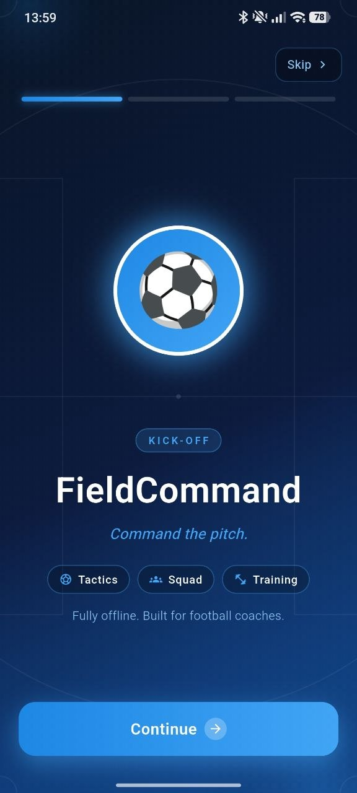
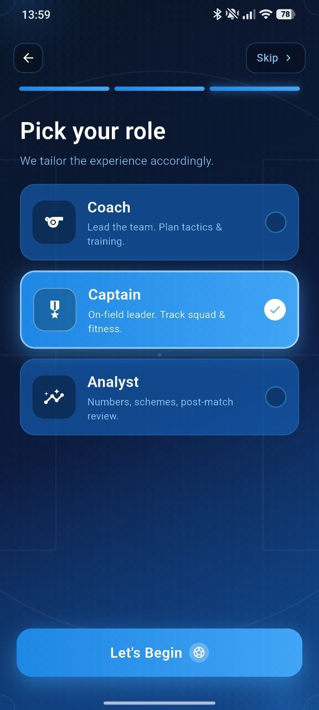
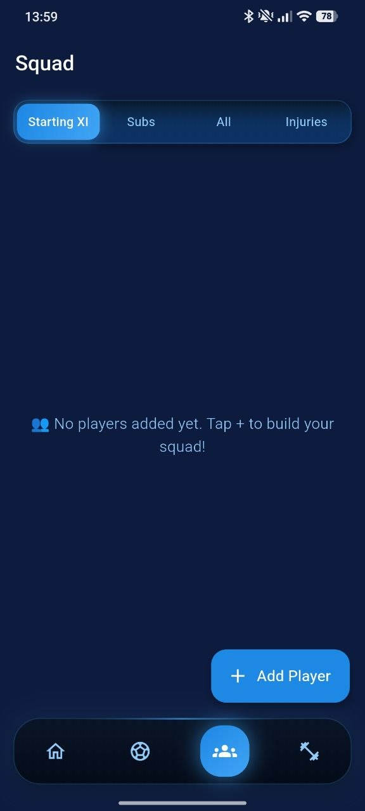
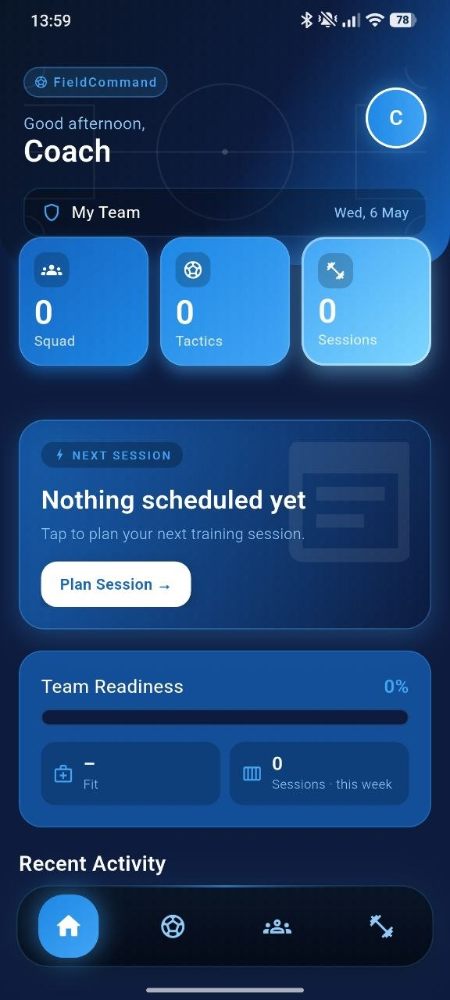
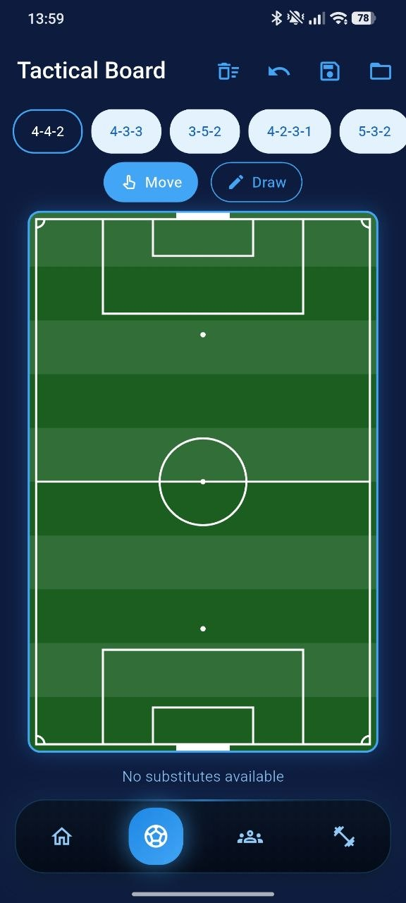
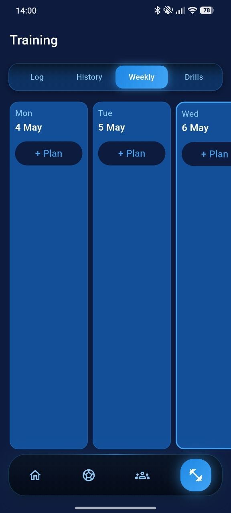

Tactical Board
Choose formations, work with pitch structure and plan movement patterns for match preparation.
1w Football Coach gives coaches a focused offline workspace for tactics, squad control, player details and training sessions — built with a premium match-day interface.



Designed around blue glow, glass panels and pitch geometry — the landing page follows the same serious coaching atmosphere as the app.
Choose formations, work with pitch structure and plan movement patterns for match preparation.
Build the squad, add new players, set positions, dominant foot, rating and availability.
Track session title, date, duration, surface, intensity and practiced football drills.
Plan training days across the week and keep preparation structured for the entire team.
Monitor squad status, sessions this week and training activity from the main dashboard.
All key coaching tools are designed to work locally on the device without account friction.
The app keeps the coaching flow simple: pick your role, open the dashboard, plan a session, manage the squad and prepare your formation.



Visual structure helps coaches think in formations, positions and movement patterns.
New player forms include jersey number, position, age, dominant foot and injury status.
Sessions can be logged by surface, duration, intensity and practiced drills.
Coaches can organize training plans across the week to keep the squad moving forward.
“The tactical board gives the app a real football planning feeling.”
Assistant coach“Squad and training tools are direct, clear and easy to use.”
Team captain“The blue glass style makes the app feel focused and professional.”
Football analystDownload 1w Football Coach and keep tactics, squad details and training plans ready on your device.
Download App ↗